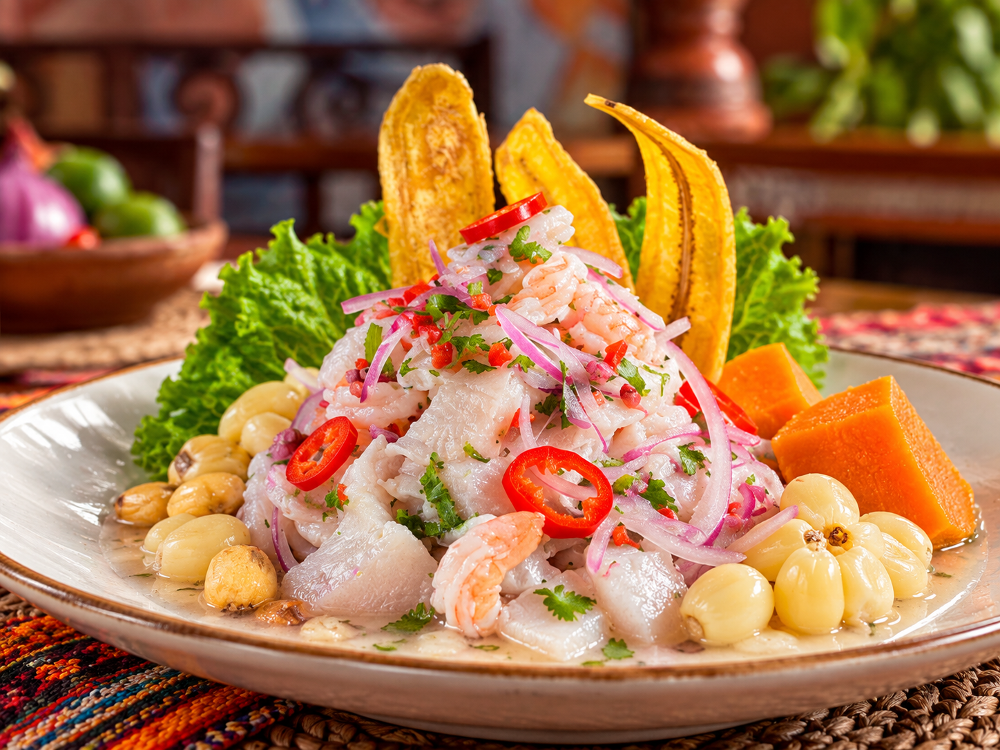
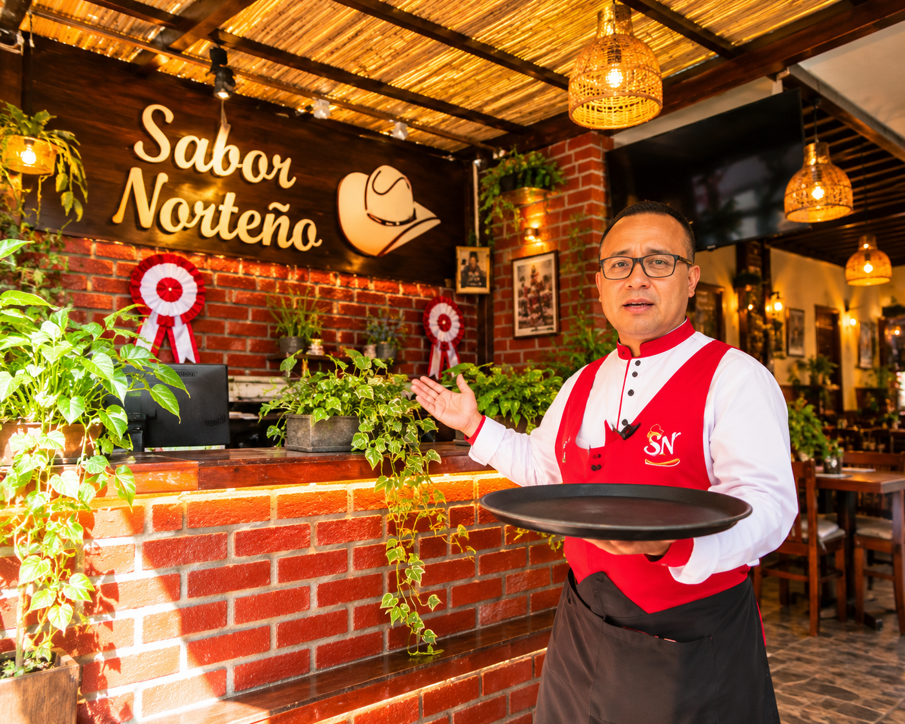

Ceviche clásico
Pescado fresco marinado en limón, acompañado de cebolla, camote y choclo.
S/ 28.00
Tradición que se disfruta
Gastronomía peruana
Disfruta de nuestra gastronomía peruana preparada con ingredientes frescos, recetas tradicionales y todo el sabor que caracteriza al norte del país.
Ver nuestro menúConoce un poco más sobre nuestra historia y nuestro compromiso con la gastronomía peruana.
Sabor Norteño es un restaurante dedicado a ofrecer platos tradicionales de la gastronomía peruana, especialmente inspirados en los sabores del norte del país.
Nuestro objetivo es brindar a nuestros clientes una experiencia agradable mediante platos preparados con ingredientes frescos, atención de calidad y el auténtico sabor de nuestra cocina.
Brindar a nuestros clientes una experiencia gastronómica agradable mediante platos tradicionales de calidad y una atención cordial.
Ser un restaurante reconocido por conservar y compartir los sabores tradicionales de la gastronomía del norte peruano.

Algunos de los sabores que podrás disfrutar en Sabor Norteño.
Estamos listos para atenderte.
Dirección:
Chiclayo, Lambayeque, Perú
Teléfono:
987 654 321
Correo:
contacto@sabornorteno.com
Lunes a sábado
11:00 a. m. - 10:00 p. m.
Domingo
11:00 a. m. - 6:00 p. m.